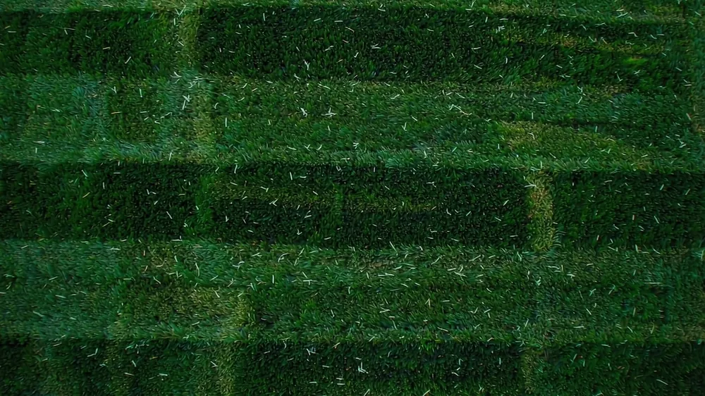

The baseline: most lawns, about weekly

By grass type
Cool-season grasses grow fastest in spring and fall; warm-season grasses peak in summer. That changes both how often and how short you cut:
| Grass | Type | Active-season frequency | Ideal height |
|---|---|---|---|
| Kentucky Bluegrass | Cool | Weekly | 2.5–3.5" |
| Tall Fescue | Cool | Weekly | 3–4" |
| Perennial Ryegrass | Cool | Weekly | 2–3" |
| Bermuda | Warm | Every 5–7 days | 1–2" |
| Zoysia | Warm | Weekly | 1–2.5" |
| St. Augustine | Warm | Every 7–10 days | 2.5–4" |
| Buffalo | Warm | Every 7–14 days | 1.5–3" |
Warm-season grasses can be cut shorter and tighter; cool-season grasses want to stay taller to shade their own roots and crowd weeds.
By region and season
Your mowing season length — how many months grass actually grows — drives your annual mow count and therefore your yearly cost. Northern lawns have a short, intense season; southern lawns can grow nearly year-round:
| Region | Growing months / yr | What it means |
|---|---|---|
| Northern (Zone 3–5, e.g. MN, ME) | 4–5 | ~20–22 mows/yr. Long winters off. |
| Mid (Zone 6–7, e.g. OH, MO) | 6–8 | ~26–35 mows/yr. |
| Southern (Zone 8–9, e.g. TX, GA) | 9–11 | ~40–48 mows/yr. |
| Gulf / Desert-Southwest (Zone 9+, e.g. FL, AZ) | 11–12 | ~48–52 mows/yr, almost weekly all year. |
These bands come from the same USDA hardiness-zone / NOAA frost-free model we use in the calculator methodology. The takeaway: a Florida homeowner mows roughly twice as often as a Minnesota one, so "annual lawn cost" differs as much by geography as by lawn size.
Adjust for weather, not the clock
- Wet spring: grass surges — you may need two cuts a week. Raise the deck if it gets ahead of you.
- Summer heat / drought: cool-season grass slows or goes semi-dormant. Stretch to every 10–14 days and keep the blade high to protect roots.
- Fall: cool-season grasses get a second growth spurt — back to weekly.
- Winter: warm-season grasses brown out; stop mowing once growth stops.
Why frequency matters for your wallet
Mow frequency is the single biggest lever on your yearly lawn cost — whether you DIY or hire. More mows means more of your time (DIY) or more invoices (hire). Use the cost calculator to see exactly how changing from weekly to bi-weekly shifts your per-season total, and the DIY vs Hire guide to see when the time stops being worth it.
See your real mow count & cost
Plug in your lawn size, region and how often you plan to mow. Get a tailored per-visit, per-month and per-season estimate in seconds.
Open the Calculator →How often should I mow my lawn?
Most lawns are mowed about once a week during active growth. Cool-season grasses (bluegrass, fescue, rye) grow hardest in spring and fall; warm-season grasses (Bermuda, Zoysia, St. Augustine, buffalo) peak in summer. Mow whenever the grass reaches about one-third above your target height, rather than on a fixed calendar.
Is it bad to mow every day?
Mowing every day is unnecessary and can stress the lawn if you remove too much. Follow the one-third rule: never cut more than one-third of the blade height in a single pass. In a rainy, fast-growing week you may need two cuts; in dry or dormant periods you can safely stretch to every 10–14 days.
What happens if I skip a week of mowing?
Skipping a week means you'll have to cut more at once, which risks scalping and clumping. If the grass got tall, raise the deck for the first pass and bag or mulch the clippings. A single missed week is recoverable; repeated neglect invites weeds and thinning.